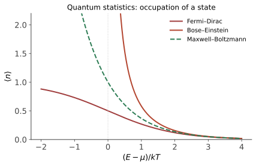

本页目录
统计物理 III · 量子统计
对标：Schroeder §7 / Pathria §7–8 ｜ 前置：sm-02、qm-01（可后补） 量子世界给统计加两条新规：全同粒子不可分辨 + 自旋定社会性格（费米子排他 / 玻色子扎堆）。由此长出两套分布，解释了经典物理的三大悬案：黑体辐射（量子论的出生地）、金属比热、以及低温下的凝聚现象。
学习层：同一个能级不是同一个单粒子态，有限谱扎堆也不是 BEC 证明
1. 先预测：分母里的正负号到底约束什么？
实验固定五层能谱 \(\varepsilon_j=0,0.5,1,1.5,2\)，每层简并度为 \(g_j=1,2,3,4,5\)。先判断：
- Fermi–Dirac 的“每态占据不超过 \(1\)”是否意味着一个有 \(g=5\) 个不同单粒子态的能量层总共也只能放一粒？
- 对粒子数守恒的理想玻色气体，化学势能否越过最低单粒子能量？
- 在这五个能级里观察到很大的基态平均占据，是否已经证明了热力学极限的 Bose–Einstein 凝聚？
揭示后可切换 FD/BE，移动 \(T\) 与 \(\mu\)，同时读取每态占据、整层粒子数与有限谱总能量。这样 Pauli 约束、能级简并和宏观凝聚不会被“低能很多粒子”一句话混掉。
2. 静态后备：每态先算，再乘简并度
令 \(k_B=1\)，单粒子态的平均占据为
| 账本 | Fermi–Dirac | Bose–Einstein |
|---|---|---|
| 每态允许占据 | \(0\le\bar n\le1\) | \(\bar n\ge0\)，无 Pauli 上限 |
| 化学势边界 | 可穿过离散能级 | 必须有 \(\mu<\varepsilon_0\)；极限中可逼近 |
| 一层的粒子数 | \(N_j=g_j\bar n_j\)，可大于 \(1\) | \(N_j=g_j\bar n_j\) |
| 稀薄高能极限 | \(e^{-(\varepsilon-\mu)/T}\) | \(e^{-(\varepsilon-\mu)/T}\) |
例如 \(\varepsilon=\mu\) 时 FD 每态占据恰为 \(1/2\)；若这一能层有四个不同态，整层平均粒子数是 \(2\)，并不违反 Pauli。BE 在 \(\mu\uparrow\varepsilon_0\) 时基态分母趋零，但有限能级账本只展示增强，不能替代固定密度、体积极限与激发态积分的凝聚判据。
3. 三条回到物理的边界
- 本实验采用有限离散谱和巨正则平均。它不会显示有限系统与热力学极限之间的非解析性差别，也不处理相互作用导致的谱重整化。
- 理想玻色气体的 \(\mu<\varepsilon_0\) 来自巨配分函数收敛；光子数不守恒时则由平衡条件固定 \(\mu=0\)，要另外选择零点能量。
- FD 的“一态一粒”指完整的单粒子量子态，包括自旋标签。一个空间轨道可因自旋简并容纳多粒，但每个自旋轨道仍只有 \(0/1\)。
- BE/FD 都在 \((\varepsilon-\mu)/T\gg1\) 时趋近 Maxwell–Boltzmann；这是一项可计算的稀薄极限，不是把量子粒子重新变成可分辨粒子。
1. 全同性与两种统计

在三维普通局域量子理论的标准粒子统计中，全同粒子交换不产生新物理态，熟悉的两类是：玻色子（整数自旋，波函数对称，可同态堆叠）与费米子（半整数自旋，反对称，Pauli 不相容——每个完整单粒子态至多一粒）。二维任意子与更一般交换统计需要另立拓扑和场论条件，不能由本页有限能级账本排除。
两大分布【推导】（巨正则系综下对单模求和，sm-02 §3）：单粒子态 \(\varepsilon\) 的平均占据数——玻色：\(\Xi = \sum_{n=0}^\infty e^{-n(\varepsilon-\mu)\beta}\) 几何级数；费米：\(n \in \{0, 1\}\) 两项：
（高能/稀薄极限两者同趋 Boltzmann \(e^{-(\varepsilon-\mu)/k_BT}\)——经典统计是量子统计的退化极限，适用判据：热波长 \(\ll\) 粒子间距。）一个 \(\mp\) 号分出两个世界：BE 在 \(\varepsilon \to \mu\) 处发散（扎堆的许可）、FD 恒 \(\leq 1\)（排他的执行）。
2. 玻色世界：黑体辐射与 BEC
黑体辐射（量子论出生地）【推导】：腔内光子气（\(\mu = 0\)——光子数不守恒），模式密度 \(g(\omega) \propto \omega^2\)（驻波计数——三维 k 空间球壳）× BE 占据 × \(\hbar\omega\)：
低频退化为 Rayleigh–Jeans（\(\propto \omega^2T\)——经典均分），高频被指数压灭——紫外灾难的解除：能量量子化 \(E = \hbar\omega\) 让高频模式"买不起入场券"（1900 年 Planck 由此打开量子世界）。积分得 Stefan–Boltzmann \(u \propto T^4\)、峰值 Wien 位移 \(\lambda_{\max}T = b\)（\(b\) 为 Wien 常数）——太阳表面 5800 K 峰在可见光、人体 310 K 峰在红外（热成像）、宇宙 2.725 K 峰在微波（CMB——cosmo-02 的主角就是一条完美 Planck 曲线）。
声子比热：Debye 模型把晶格振动当"声子气"同法处理——低温 \(C_V \propto T^3\)（实验吻合，Dulong–Petit 低温失效的解答；solid-01 详展）。
Bose–Einstein 凝聚（BEC）【骨架】：对三维均匀、非相互作用、二次色散 \(\varepsilon=p^2/2m\) 的玻色气，态密度满足 \(g(\varepsilon)\propto\varepsilon^{1/2}\)。\(T\) 降低时 \(\mu\uparrow0\)，激发态容纳能力
在该三维热力学极限中有限饱和，于是多余粒子宏观占据基态。这不是任意维数与边界条件下的自动结论：一维、二维均匀理想气体在有限温度的热力学极限中没有同样的常规 BEC，谐振俘获又会因不同态密度得到不同判据。（1995 年冷原子实现；超流氦还需相互作用理论。）
3. 费米世界：简并电子气
金属自由电子（\(T \ll T_F\) 时"简并"）：Fermi 能 \(\varepsilon_F\) = \(T = 0\) 时填到的最高能级——
【推导：k 空间填球到 \(k_F\)，计数 \(n = \frac{k_F^3}{3\pi^2}\)（含自旋 2）】。金属 \(\varepsilon_F \sim\) 几 eV ⇒ \(T_F \sim 5\times10^4\) K——室温金属电子是"冷"的（\(T \ll T_F\)）：Pauli 排斥把电子逼上 eV 级动能，与温度无关。
三大悬案的解答：金属比热为何只有均分预言的 ~1%——只有 Fermi 面附近 \(\sim\frac{T}{T_F}\) 比例的电子能被热激发（\(C_e \propto T\)，线性项——低温实验的金属指纹）；Pauli 顺磁、电子简并压（白矮星靠它抗引力——Chandrasekhar 极限 \(1.4M_\odot\)：费米统计称出恒星命运的体重秤，超过则中子星/黑洞——gr-03 接力）。
化学势的性格对照：费米 \(\mu \approx \varepsilon_F > 0\)（排队队尾的高度）；玻色 \(\mu \leq 0\)（挤在底层）——一图看懂两种社会。
4. 练习与要点
例 1（Planck 峰手算） 太阳 5800 K：Wien \(\lambda_{\max} = \frac{2.9\times10^{-3}}{5800} \approx 500\) nm（绿光——人眼灵敏度峰与之吻合非巧合：演化对着太阳谱优化）；人体 310 K → 9.4 μm（红外热像仪的工作波段）。
例 2（简并判据） 金属电子 \(n \sim 10^{29}/\mathrm{m}^3\)：\(T_F \sim 10^5\) K ⇒ 高度简并 ✓；常温气体 \(n \sim 10^{25}\)、质量大 ⇒ 热波长远小于间距——经典 ✓；冷原子 BEC 要把温度压到 nK——两个极限的定量分界（热 de Broglie 波长 \(\lambda_T = \frac{h}{\sqrt{2\pi mk_BT}}\) 与间距比较）。
例 3（白矮星量级） 简并压 \(P \propto n^{5/3}\)（\(T=0\) 费米气体，一行积分）对抗引力 \(\propto \frac{M^2}{R^4}\)：平衡给 \(R \propto M^{-1/3}\)——越重越小的反常星体；相对论修正（\(E = pc\) 使 \(P \propto n^{4/3}\)）让平衡在 \(1.4M_\odot\) 处消失——Chandrasekhar 极限的三行版。\(\blacksquare\)
统计物理三页完卷（进阶三页在研究生板块等着：相变、Ising、重整化群）。下一门：量子力学——从黑体辐射点燃的革命本体。